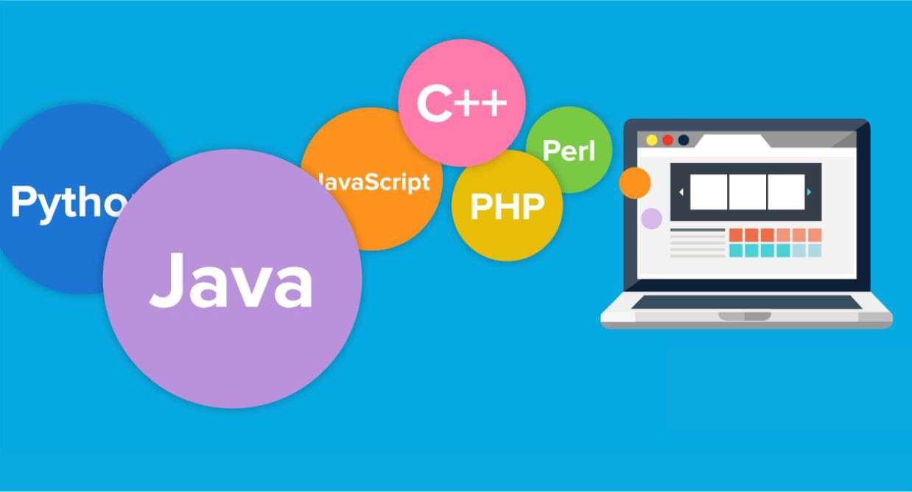

Programming languages
Links:
The first computer programming language was created in 1883, when a woman named Ada Lovelace worked with Charles Babbage on his very early mechanical computer, the Analytical Engine. While Babbage was concerned with simply computing numbers, Lovelace saw that the numbers the computer worked with could represent something other than just amounts of things. She wrote an algorithm for the Analytical Engine that was the first of its kind. Because of her contribution, Lovelace is credited with creating the first computer programming language. As different needs have arisen and new devices have been created, many more languages have followed
1883: Algorithm for the Analytical Engine: Created by Ada Lovelace for Charles Babbage’s Analytical Engine to compute Bernoulli numbers, it’s considered to be the first computer programming language.
1949: Assembly Language: First widely used in the Electronic Delay Storage Automatic Calculator, assembly language is a type of low-level computer programming language that simplifies the language of machine code, the specific instructions needed to tell the computer what to do.
1957: Fortran: A computer programming language created by John Backus for complicated scientific, mathematical, and statistical work, Fortran stands for Formula Translation. It is the one of the oldest computer programming languages still used today.
1964: BASIC: Developed by John G. Kemeny and Thomas E. Kurtz at Dartmouth College so that students who did not have a strong technical or mathematical understanding could still use computers, it stands for Beginner’s All-purpose Symbolic Instruction Code. A modified version of BASIC was written by Bill Gates and Paul Allen. This was to become the first Microsoft product.
1972: C: Developed by Dennis Ritchie at Bell Labs, C is considered by many to be the first high-level language. A high-level computer programming language is closer to human language and more removed from the machine code. C was created so that an operating system called Unix could be used on many different types of computers. It has influenced many other languages, including Ruby, C#, Go, Java, JavaScript, Perl, PHP, and Python.
1972: SQL: SQL was developed by Donald D. Chamberlin and Raymond F. Boyce at IBM. SQL stands for Structured Query Language. It is used for viewing and changing information that is stored in databases. SQL uses command sentences called queries to add, remove, or view data.
1978: MATLAB: Developed by Cleve Moler. MATLAB stands for Matrix Laboratory. It is one of the best computer programming languages for writing mathematical programs and is mainly used in mathematics, research, and education. It can also be used to create two- and three-dimensional graphics.
1983: Objective-C: Created by Brad Cox and Tom Love, Objective-C is the main computer programming language used when writing software for macOS and iOS, Apple’s operating systems.
1983: C++: C++ is an extension of the C language and was developed by Bjarne Stroustrup. It is one of the most widely used languages in the world. C++ is used in game engines and high-performance software like Adobe Photoshop. Most packaged software is still written in C++.
1987: Perl: Perl was originally developed by Larry Wall in 1987 as a scripting language designed for text editing. Its purpose was to make report processing easier. It is now widely used for many purposes, including Linux system administration, Web development, and network programming.
1991: Python: Designed by Guido Van Rossum, Python is easier to read and requires fewer lines of code than many other computer programming languages. It was named after the British comedy group Monty Python. Popular sites like Instagram use frameworks that are written in Python.
1991: Visual Basic: Developed by Microsoft, Visual Basic allows programmers to choose and change pre-selected chunks of code in a drag-and-drop fashion through a graphical user interface (GUI).
1993: R: Developed by Ross Ihaka and Robert Gentleman at the University of Auckland, New Zealand, R is named after the first names of the first two authors. It is mostly used by statisticians and those performing different types of data analysis.
1995: Java: Originally called Oak, Java was developed by Sun Microsystems. It was intended for cable boxes and hand-held devices but was later enhanced so it could be used to deliver information on the World Wide Web. Java is everywhere, from computers to smartphones to parking meters. Three billion devices run Java!
1995: PHP: Created by Rasmus Lerdorf, PHP is used mostly for Web development and is usually run on Web servers. It originally stood for Personal Home Page, as it was used by Lerdorf to manage his own online information. PHP is now widely used to build websites and blogs. WordPress, a popular website creation tool, is written using PHP.
1995: Ruby: Ruby was created by Yukihiro “Matz” Matsumoto, who combined parts of his favorite languages to form a new general-purpose computer programming language that can perform many programming tasks. It is popular in Web application development. Ruby code executes more slowly, but it allows for computer programmers to quickly put together and run a program.
1995: JavaScript: Created in just 10 days by Brendan Eich, this language is mostly used to enhance many Web browser interactions. Almost every major website uses Javascript.
2000: C#: Developed by Microsoft with the goal of combining the computing ability of C++ with the simplicity of Visual Basic, C# is based on C++ and is similar to Java in many aspects. It is used in almost all Microsoft products and is primarily used for developing desktop applications.
2009: Go: Go was developed by Google to address problems that can occur in large software systems. Since computer and technology use is much different today than it was when languages such as C++, Java, and Python were introduced and put to use, problems arose when huge computer systems became common. Go was intended to improve the working environment for programmers so they could write, read, and maintain large software systems more efficiently.
2014: Swift: Developed by Apple as a replacement for C, C++, and Objective-C, Swift is supposed to be easier to use and allows less room for mistakes. It is versatile and can be used for desktop and mobile apps and cloud services.
Computer Programming Languages Today
Most computer programming languages were inspired by or built upon concepts from previous computer programming languages. Today, while older languages still serve as a strong foundation for new ones, newer computer programming languages make programmers’ work simpler. Businesses rely heavily on programs to meet all of their data, transaction, and customer service needs. Science and medicine need accurate and complex programs for their research. Mobile applications must be updated to meet consumer demands. And all of these new and growing needs ensure that computer programming languages, both old and new, will remain an important part of modern life.
Be sure to check out our ranking of the best online colleges as well as our college rankings focused on computer science degree options.
